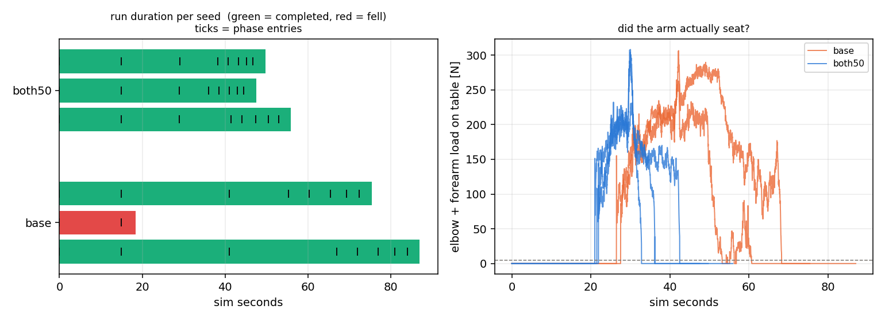

The deploy pipeline's duration is written into the strategy JSON, not produced by the planner. This measures how much of it is removable and what the removal costs, at a plan rate matched to the robot.
success_sustain_time 15 and
target_ramp_sec 5, and the phase advances at t = 15.00,
measured. target_ramp_sec drives the target-pose interpolation
concurrently with the sustain; it does not gate
Transition's advance test. So a strategy's scheduled floor is the
sum of its finite sustains and nothing else — 70 s for strategy 24, not the
137 s you get by adding the ramps. Cutting a ramp makes the reference move
faster inside the same window; only cutting a sustain shortens the window.total_distance is computed from the keyframe's contact pairs, and
lean keyframes declare none, so it is identically 0 and the
total_distance <= target_distance_tolerance test is always true
(lean.cc, and the comment at the commit-retry block says so
explicitly). Phase advance on this strategy is a pure timer. Only the
strat-25/27 targeting rungs, which measure a real hand-to-target distance,
have a tolerance that gates anything.One process per run, niced, 4 planner threads. Variants are
generated by scaling every sustain and ramp except phase 0, which is the
bring-up settle the real robot needs and is held byte-identical:
base phase 0 fixed; everything else stock dwell floor 70.0 s both50 sustains x0.5 AND ramps x0.5 downstream dwell floor 42.5 s
Selected at runtime by LEAN_STRATEGY_OVERRIDE, a default-off env
read added to lean.cc so variants can run without overwriting the
slot's own JSON. Unset, the load path is byte-identical.
| variant | dwell floor | n | completed | fell | t_complete median | brace peak | brace duty |
|---|---|---|---|---|---|---|---|
| base | 70.0 s | 3 | 2 | 1 | 81.2 s | 228 N | 52% |
| both50 | 42.5 s | 3 | 3 | 0 | 49.7 s | 227 N | 53% |

| phase | stand_up | brace_lean | release | sb_r1 | sb_r2 | sb_r3 | sb_r4 |
|---|---|---|---|---|---|---|---|
| base — asked | 15 | 24 | 14 | 5 | 5 | 4 | 3 |
| base — measured | 15.00 | 26.00 | 20.19 | 5.00 | 5.00 | 4.00 | 3.00 |
| both50 — asked | 15 | 12 | 7 | 2.5 | 2.5 | 2 | 1.5 |
| both50 — measured | 15.00 | 14.01 | 9.07 | 2.50 | 2.50 | 2.00 | 1.50 |
Five of the seven phases land on their asked sustain to the sample interval: they are pure timers with no feedback in them at all. Only two exceed it, and by a repeatable amount.
brace_lean overruns its sustain by exactly 2.00 s in both
arms. That is brace_contact_verify (2.0 in
Lean_H12_Magpie.xml): the 2026-08-12 brace-contact-gated advance
holds the brace rungs until the forearm pad has been in believed table contact
continuously for that long, with brace_contact_loss (1.0 s) resetting
the counter. release carries the same gate and a larger, more
variable excess (+6.2 s stock, and 26 s vs 14 s across two seeds) because the pad
is coming off and re-seating.
This is why halving the dwell did not cost anything. The two phases that carry
the physical risk are not on the timer — the timer is their lower
bound and the contact gate is what actually releases them. Shortening the timer
lowers a floor the gate was already above. The four standback rungs
and the final stand have no such gate: they are 17 s of open-loop clock in the
stock schedule and they ran to the millisecond, whatever the robot was doing.
Halving every downstream dwell did not cost robustness in this sample. both50 completed 3/3 against the stock schedule's 2/3, and the runs that finished did so 31 s earlier. The sample is three seeds per arm: this is a go-look-further result, not a certified one.
spp 4) and was discarded:
below the robot's own rate every arm looks more fragile than it is.ninja -C build_cmake lean_bench
python3 studies/lean_sched/gen_variants.py h12_recovery_noreach
python3 studies/lean_sched/sweep.py --out studies/lean_sched/runs/s24 \
--variants base,both50 --seeds 3 --jobs 1 --threads 4 --spp 3
python3 studies/lean_sched/analyze.py --runs studies/lean_sched/runs/s24 \
--out docs/lean/media
sweep.py refuses any grid
leaving fewer than 6 of the box's cores free. A 4×5-thread sweep on this
20-core machine hard-crashed it on 2026-08-26 and lost every partial result;
rows are now fsynced as they land.